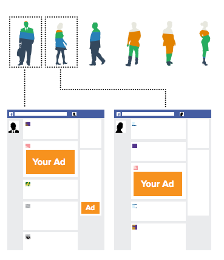
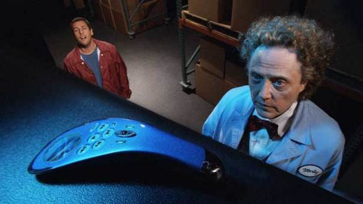

- Published by Elizabeth Yin -- Get updates of new posts here
advertising

Facebook ads have gone through massive transitions over the years. In the beginning, the targeting capabilities were very simple: select demographic options and get your campaign in front of people who met those demographics. The problem with this was that you didn’t have the ability to go granular in your campaign. If you wanted to reach small business owners, they put your ad in front of EVERYONE who was even remotely involved with a small business. But what if you just wanted to reach say small business owners who were Constant Contact users? There wasn’t a way to get that granular.… Read the rest
- Published by Lee Constantine -- Get updates of new posts here
You want the latest and greatest about what’s happening in the online advertising world? Well, look no further.
Who Should Use Pay-Per-Click Advertising and Who Shouldn’t

Chances are, you’ve heard about the amazing return on investment that can be had with pay-per-click (PPC) advertising. A return of 300 percent or even higher isn’t at all unusual with this form of advertising. Read more…
Inventor of World Wide Web Criticizes Online Advertising
Tim Berners-Lee, inventor of the World Wide Web, has little positive to say about advertisers who dress their online ads up to look like content.He also slammed Microsoft’s practice of attaching ads to emails sent by users of its Hotmail service, saying that it “either perverts or distorts the message.” Read more…
Twitter Tests Click-to-Call Button in Sponsored Ads

San Francisco-based company’s ad rates dropped in the final three months of last year, marking the seventh straight quarter of such declines. Twitter is actually pulling in an increasing amount of revenue from ads because more users are engaging with them by clicking on links, or by retweeting or favoriting them. Read more…
- Published by Lee Constantine -- Get updates of new posts here
So, each week LaunchBit scours the web to find some of the top online advertising posts and news articles, just for you. Keep scrolling and check out what we’ve rounded up this week.
Watching Olympics Online? Here’s Why You See the Same Ads Over and Over

This inability to barrage online audiences effectively with marketing during sports broadcasts feels almost un-American. It’s a baffling breakdown in the capitalist order, given the extreme enthusiasm the media and technology industries have shown for digital video ads. Read more…
Ready for Hillary Spends $1 Million in Online Advertising

The super PAC Ready for Hillary is spending heavily on online advertising to reach out and sign up volunteers and donors. Ready for Hillary, a Democratic-oriented super PAC, that is encouraging a 2016 presidential run by former Sen.… Read the rest
- Published by Lee Constantine -- Get updates of new posts here
This is a follow-up to a previous post. So, if you decide to read further it means you’ve determined that you have enough visitors on your landing pages to justify your time split testing.

Image credit: personal-development-is-fun.com
So you’ve decided to take the leap and think split testing is worth your time. Ok, so where do you start?
We all know what to split test
Of course, you want to split test whatever will guide your traffic to your call-to-action. Most marketers like to make adjustments to the most important elements – like form length, headline, and call-to-action – because they have the most impact on whether your traffic will convert or not.… Read the rest
- Published by Lee Constantine -- Get updates of new posts here
So you’ve created a beautiful landing page, your call to action fits your purpose, and you’ve published it to the masses. You’re feeling relieved as you wait for the results to come back in hopes that you’ll be able to pat yourself on the back later. And then, your relief quickly turns to disappointment when you notice that you’re not converting as much traffic as you’d anticipated and you’re left staring at your mediocre results wondering what went wrong.

Image credit: b2bsecrets.com
This scenario happens quite often and leaves a lot of b2b marketers with a decision to make. To split test or not to split test.… Read the rest
- Published by Elizabeth Yin -- Get updates of new posts here
By Elizabeth

image credit: Steve Rhodes
A lot of B2B advertisers ask us what a good click-through-rate is for their ads. In fact, about 30% of B2B marketers judge the performance of their ad campaigns by their click-through-rate. However, measuring whether the click-through-rate of your ad campaign is “good” or “bad” is complicated and sometimes impossible.
What causes high click-through-rates?
Let’s dissect what makes for a good click-through-rate: ad positioning, targeting & context, creative & copy, and ad format.
1) Ad positioning
This is the placement of the ad. On a website, banner ads are typically placed on the right side of the page.… Read the rest
- Published by Lee Constantine -- Get updates of new posts here
I spoke with a marketer this week and he told me that he hated B2B display advertising with a passion. This type of advertising made him so angry that I could hear him bursting a spleen on the phone. I wanted to reach out and give my friend the biggest hug because no one deserves to feel that way about what essentially is the Internet Advertisers Money Making Machine! If you know how to test your B2B Advertising campaigns, you’ll create a money making machine for your company where no advertising channel will ever stress you out. Here are my three easy steps that I want to sum up from our upcoming White Paper: “How to run a Test Trial of New B2B Distribution Channels” by our CEO, Elizabeth Yin.… Read the rest
- Published by Elizabeth Yin -- Get updates of new posts here
By Elizabeth

image credit: Joe Lanman
I was chatting with my co-worker about what days of the week B2B marketers prefer to take out ad campaigns. He argued that most B2B marketers prefer to take out ads Monday – Wednesday. Afterall, enterprise software previously required high touch sales, and sales teams and decision makers don’t like to work the weekends. I argued that with the rise in Saas dominating the B2B market and growing at nearly 20% YOY, B2B companies are able to acquire customers with less high-touch sales. So, software users can start free trials right away without a credit card — even on the weekend.… Read the rest
- Published by Lee Constantine -- Get updates of new posts here
The LaunchBit team wants to change the face of B2B Advertising this December! Therefore, starting today, December 2nd email advertising inventory on the line for our best B2B marketing prospects. If you are a B2B marketer with quality advertising creatives and killer offers, we are offering you the opportunity to gain access to our $10,000 $8,000 giveaway of free B2B advertising. Here are three reasons and why you should take notice and apply for our giveaway today. Click the button below and see if you qualify.

1. Your competition just ran out of B2B Advertising budget
While speaking with B2B marketers in November, we heard that quite a few of them have run out of marketing budget for 2013 or have their entire remaining budget already assigned.… Read the rest
- Published by Elizabeth Yin -- Get updates of new posts here
I discussed on Tuesday the importance of changing your ad creatives in order to get the best PPC prices. But, how many creatives is enough to test?
This is actually a huge hangup for most advertisers I meet. Most marketers are too busy managing tons of different activities — no one has time to come up with a lot of creatives only to test a channel briefly and then scrap it all together. Here are 2 rules for testing a range of creatives.
Image credit: Digitalmarketer.com
1) Use a handful of offers
It’s worth your while to come up with a handful of offers that you can use to test every new paid marketing channel.… Read the rest


{kind=link}
{kind=link}
{kind=link}
{kind=link}